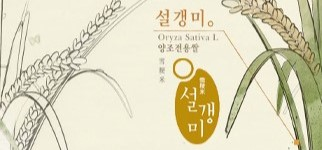

국순당 연구소
우리술과 우리문화 국순당이 지켜갑니다.
국순당 연구소
우리술의 다양성을 되살리고
우리술 문화를 복원하는 공간
-
사업의 중요 기술분야에서 경쟁 위치 확보 및 사업영역 다각화
-

제품의 기능과 효익을 확장하여 삶의 질 향상에 기여
-
창조적 혁신을 통한 초일류 기술력 확보
-
지속적 변화를 통한 조직원의 전문성 강화
연구 분야
설갱미란?
- 품종
- 설갱
- 학명
- Oryza sativa L. / 벼
- 재배지역
- 중부 및 남부평야지
- 주요특성
- 가공용(발효식품용), 일반계(자포니카)단간, 내도복성, 내수발아성, 다수성, 고품질(연질미)
- 1991년 농촌진흥청 작물시험장에서 육성하여 2001년 등록한 벼 품종 입니다. 찹쌀 외관의 뽀얀 멥쌀로 찰벼보다 더 불투명한 배유 특성을 나타내고 단백질 함량이 낮으며 유리당과 필수 아미노산 함량이 높습니다.
#우수한영양
#주질향상
#약속재배
생쌀발효법이란?

- 고사촬요(攷事撮要)
- “쌀을 가루 내 끓는 물을 부어
반죽하여 술을 빚는다”
무증자 발효법으로 술이 만들어질 때까지 높은 열을 가하지 않고, 가루 낸 생쌀과 상온의 물을 그대로 사용하여 술을 빚는 방법입니다. 연구를 통해 누룩 미생물 중 생쌀 분해가 가능한 우수한 곰팡이(거미줄 곰팡이)를 분리해내어 생쌀 발효법을 복원하였습니다.
#우수한영양
#에너지절약
#친환경공법
연구자료
- 암세포에 대한 전통약주의 세포독성 효과
- 한국 전통약주의 위 보호 효과
- 암세포에 대한 전통약주의 세포독성 효과
- Nuruk extract inhibits LPS-induced production of nitrite and IL-6 in RAW264.7 cells through blocking activation of p38 MAPK
- 누룩 (Rhizopus oryzae KSD-815)으로부터 분리한 지질화합물의 세포독성 및 항염증 활성
- 한국 전통 약주의 B16BL6 mouse melanoma 및 HRT18 human colon adenocarcinoma 세포 성장 억제 효과